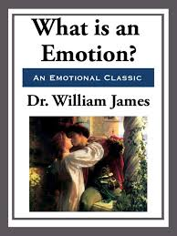

📚 Volver al Catálogo
📚 Volver a la Galería
W. James
¿Qué es una emoción?
- Sinópsis:
-
En su famoso artículo "¿Qué es una emoción?", William James propone una teoría revolucionaria que invierte la concepción tradicional de las emociones. En lugar de sentir una emoción (por ejemplo, tristeza) primero y luego experimentar las respuestas corporales (llorar), James argumenta que primero experimentamos las alteraciones fisiológicas (palpitaciones, sudoración, tensión muscular, lágrimas) y luego interpretamos estas sensaciones corporales como la emoción. En otras palabras, no lloramos porque estamos tristes, sino que sentimos tristeza porque lloramos. La emoción, según James, es la conciencia de estos cambios corporales.

- Detalles de Publicación:
- Escrito: El artículo fue publicado en 1884.
- Publicado: En la revista filosófica británica "Mind" con el título original "What is an Emotion?". Este artículo tuvo un impacto significativo en la psicología y dio lugar a la famosa teoría de James-Lange de la emoción (ya que Carl Lange propuso una idea similar de forma independiente).
- Más libros de James aquí
⬆️